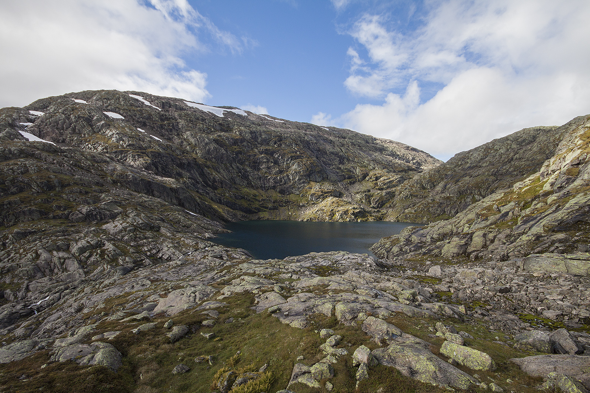
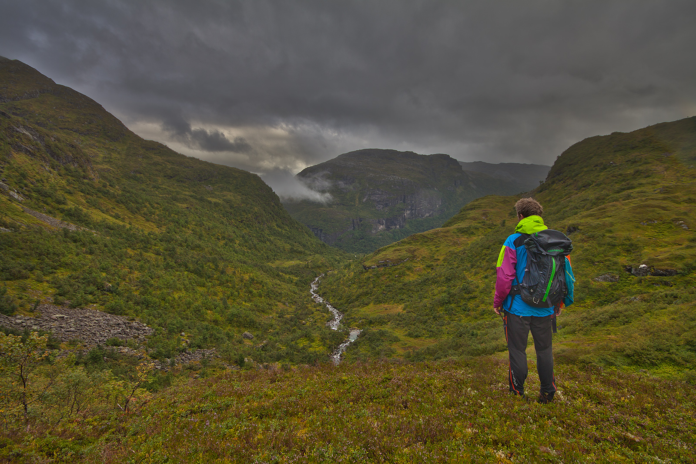

Trollavatnet i Espelandsdalen
Trollavatnet (ofte forkorta Trollvatnet) er eit lite vatn som ligg høgt til fjells, nærmare bestemt på ca. 1200 moh., rett under Olsskavlen (1576 moh.).
Ein spennande plass å begynne turen er frå Espelandsdalen i Granvin kommune. Det er mogleg å parkere ved Espelandsfossen, der ruta begynner rett til høgre for fossen. Det er godt merka opp til stølane som ligg over fossen ved Botnen, men pass på at du får deg ein tur utpå kanten av fossen før du går vidare inn dalen. Det er bratt, men du får ein fantastisk utsikt!


Frå stølane over fossen er stien fortsatt særs god, men det blir etter min meining vanskeleg å finne den optimale ruta når du nærmar deg Nordrebotnen (og Vestrebotnen). Sjå sporloggen for ein visning av vegen eg gjekk. Du vil sjå at eg gjekk til venstre og følgtee elva på vegen opp, noko som involverer litt lett småklyving - dog ikkje umogleg i det heile tatt for dei fleste. Når det er sagt så vil eg anbefale å halde seg til høgre og gå opp før du har kome heilt inn i dalen. Her er det ikkje utsatt, og det kan godt vere du blir belønna med like enorme mengder multer og blåbær som eg blei. Frå Nordrebotnen og opp til Trollabotn og Trollavatnet er det ei ny kneik. Spennande terreng som krever utforsking.


Som ein kanskje ser er det særs fristande å gå vidare til Olsskavlen, då ruta er fin å gå og det berre er 376 høgdemeter igjen til toppen. Eg rakk det ikkje på denne turen, men ser for meg at denne rundturen ned via Stavaskarnuten til Olastøl er ein real godbit.


Sjå sporloggen hjå Endomondo. Eventuelt kan du sjå GPS-ruta under (og laste den ned):